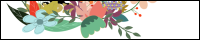
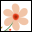
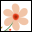

About
当サイトはxxxでxxxの…etc.リンクについては下記をご覧ください。
リンクについて
当サイトはリンクフリーです。貼るも剥がすもご自由にどうぞ。バナーは以下のものをお使いください。
- Site name ： Template#041
- Address ： http://xxxxxxxxxx.xxxxx.jp
- Web master ： xxx
- Banner ：
 

サンプルフォーム
サンプルなので動作しません。
サンプルなので動作しません。